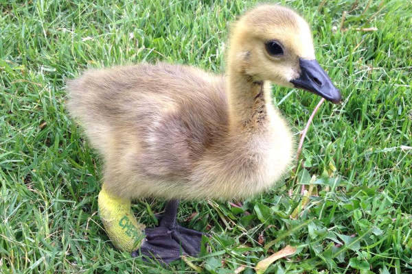
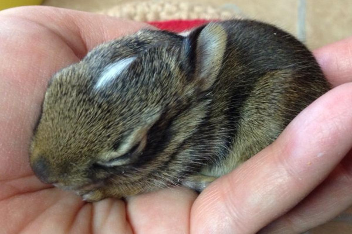
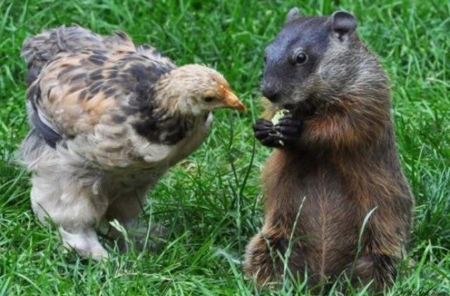

Click to make a donation
Wildlife Haven Waterloo is a volunteer-run wildlife rehabilitation facility in Waterloo, Ontario, Canada.
Holiday fundraising items
WHW holiday calendars and cards are now in and available for purchase! All proceeds are in direct support of our non-profit wildlife rescue and the animals in our care.
Pickup is available in Waterloo, Mississauga, and Milton. Shipping is also available (shipping costs extra).
If you are interested in placing an order, please message us on Facebook or via email at joyswildlifehaven@gmail.com. Please indicate quantity of order and whether you would like to pick it up or have it shipped.
WHW holiday bundle: $25
- includes WHW 2017 calendar and WHW holiday card pack
WHW 2017 calendar: $18
- all the animals featured were cared for by Wildlife Haven Waterloo
WHW holiday card pack: $10
- includes 4 blank cards featuring different animals
Our mission
The mission of Wildlife Haven Waterloo is to rescue, treat, and release wild animals that have been orphaned or injured.
Some wild animals are displaced by the expansion of towns and cities. Others survive on the margins of human settlements. Many more live in areas that are divided by roads. When wildlife comes into contact with humans or vehicles, the outcome is often negative. Animals may be injured. Juveniles may lose their parents.
At Wildlife Haven Waterloo, we care for wild animals that have been afflicted by human activity. We avoid taming the animals that we rescue because wildlife should remain wild. We treat injured animals and feed orphans until they are strong enough to live independently, and then we release them in suitable habitat.
We are authorized by the Ontario Ministry of Natural Resources to rehabilitate wildlife. However, we receive no financial assistance from the government. This is a labor of love. Our work is carried out entirely by volunteers and funded out of pocket. If you would like to support our mission, please consider making a gift using the donation buttons further below.
What to do in a wildlife emergency
Have you found a wild animal that appears to be injured or orphaned? Pause before you do anything. Observe from a distance and wait. In many cases, the animal will do better without human intervention.
If you see a young animal on its own, be aware that its parents may have left it there for good reason. Infant mammals and birds are often left in a hiding spot while their parents forage for food. The parents may return infrequently, perhaps once a day, in order to keep predators from discovering the location. Humans may draw the attention of predators by spending time near an infant animal. If you must check on an animal, do so unobtrusively.
If you have determined that a wild animal needs help, contact a nearby wildlife rehabilitation facility that is authorized to handle the species of animal that you have found.
• Ontario Ministry of Natural Resources: List of wildlife rehabilitators and authorized species
• Ontario Wildlife Rescue: Map of wildlife rehabilitation facilities
Donations
Wildlife Haven Waterloo receives no government funding. We rely on the efforts of volunteers and the generosity of supporters. You can help us continue our work by clicking on a donation button below.
Gifts of any amount are much appreciated. Your donation will be processed securely by PayPal. Major credit cards are accepted.
Single donation
Recurring donation for 12 months
Amazon link
If you're an Amazon customer, you can support Wildlife Haven Waterloo by going through our link before adding items to your shopping cart:
How does this work?
If you click on our link before filling your Amazon shopping cart, a percentage of your purchase amount goes to Wildlife Haven Waterloo. This doesn't cost you anything extra. Amazon recognizes that you used our link and awards us a commission.
When you want to order from Amazon, going through our link is an easy way to support Wildlife Haven Waterloo.
